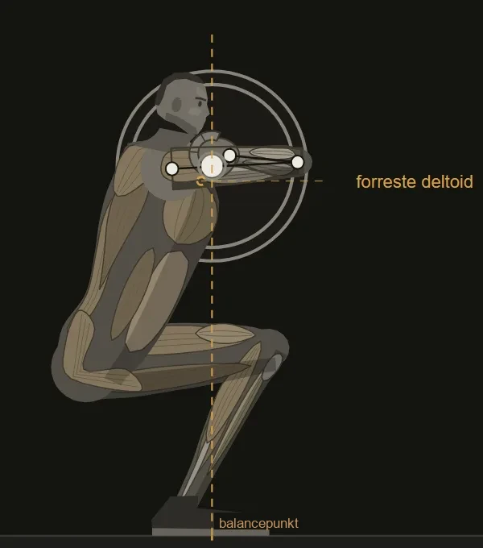
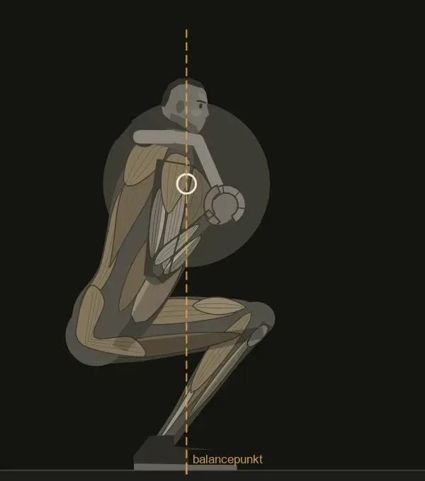

01Dybde og balance: start med opgaven
Start med opgaven: I styrkeløft skal du nå konkurrencens dybdekrav. I anden træning vælger du et dybdemål efter formålet og den udførelse, du kan arbejde med. Balancen skal kunne holdes gennem bevægelsen. Torsohældning, knævandring og fodstilling kan se forskellige ud, selv når to løftere løser samme opgave.
Alt andet varierer. En anden krop, en anden stangplacering eller en stivere ankel giver andre vinkler ved samme dybde og samme balance.
Prøv og mærk. Find en fodkontakt, hvor du kan holde balancen ned og op. Mærk, om trykket glider mod tæerne eller hælen, og se på filmen, om positionen ændrer sig samtidig.
Reglerne og målingerne bag
Efter IPF's regler skal overkanten af låret ved hoften ligge under toppen af knæet i bunden, og løftet slutter oprejst med låste knæ. Dybden bedømmes altså på to punkter på kroppen, og dem kan du selv se på en film fra siden.
Når du står stille, skal kroppens og stangens samlede tyngdepunkt ligge over støttefladen under fødderne. Stangen alene viser ikke det tyngdepunkt. I den kvasistatiske model holdes det samlede tyngdepunkt over et valgt balancepunkt; det giver ikke et krav om lodret stangbane gennem et rigtigt løft. På filmen følger jeg stangens bane og ser efter ændringer fra gentagelse til gentagelse. Fodkontakten vurderer jeg særskilt sammen med løfteren.
Regelbogen
Efter at stangen er taget ud af stativet, skal løfteren gå tilbage og indtage startpositionen. Når løfteren står stille, oprejst (en lille afvigelse er tilladt) med låste knæ, giver overdommeren signal: en nedadgående armbevægelse og kommandoen "Squat". Der er kun ét nedturforsøg. Dobbelt hop i bunden eller enhver nedadgående bevægelse i opturen er en grund til underkendelse. Til sidst skal løfteren stå stille i toppen, før overdommeren signalerer, at stangen skal stilles.
IPF Technical Rulebook 2026, afsnit 4.1, punkt 2 til 4, og 4.1.1, punkt 2.Stangens vej og tiden
Stangens vandring var 0,60 til 0,64 m hos 18 fritidstrænede ved 3RM. Regelbogen kræver, at løfteren står stille, men angiver ingen varighed for nedturen, og ingen af de kilder, jeg bygger på, giver et tal for nedturens varighed ved konkurrencevægt. Opturen tog i en gruppe på 25 fritidstrænede ved 3RM 2,8 s fra bunden til det andet hastighedstop.
Larsen m.fl. (2021b). van den Tillaar m.fl. (2014).Vendepunktet og sticking point
Stangen bremser kort lige efter bunden og igen i opturens første del. Hos 25 fritidstrænede ved 3RM (90 ± 27 kg) var stanghastigheden 0,34 m/s ved det første hastighedstop, 0,24 s efter bunden og 0,06 m over den, og minimum, 0,11 m/s, kom 1,48 s efter bunden og 0,24 m over den. Hos 15 styrketrænede mænd ved sidste gentagelse af 6RM (137 ± 28 kg) var den 0,174 m/s, 0,380 s efter bunden og 0,067 m over den.
Hos 10 styrkeløftere ved 5RM (158 ± 29 kg) begyndte sticking-regionen ved 12,2 ± 3,7 % og sluttede ved 39,7 ± 9,7 % af stangens opadgående vandring. Hos 25 løftere ved en konkurrence var hastigheden 0,09 m/s, låret 32,5° ± 3,0 over vandret og torsoen ca. 49° fra lodret. Hos 24 løftere ved et amerikansk mesterskab i 1974 var låret ca. 30° ± 2. Oversigten samler det som, at sticking point ligger i opturens første tredjedel. Grupperne er forskellige i vægt og erfaring, så tallene er ikke et samlet facit.
Larsen m.fl. (2021a). van den Tillaar m.fl. (2014). van den Tillaar m.fl. (2020). Hales m.fl. (2009). McLaughlin m.fl. (1977), tallet gengivet efter Kompf & Arandjelović (2017).Hvad modellen viser, og hvad den ikke gør
Til at tegne positionerne bruger jeg en segmentmodel: stive led og segmenter set fra siden, med masse, balance og ledmomenter. Den regner kvasistatisk, så den kender ikke hastighed. Tider og hastigheder er derfor altid målinger fra litteraturen, aldrig modellens. Modellens tal er ikke et bevis for noget; de viser, hvad geometrien tvinger, når målene er givet. Hvad en bestemt løfter gør, kan kun en måling af den løfter vise.
Modelvalg.Når dybdemålet er valgt, skal du finde en position, der kan løse opgaven. Start med kroppens ramme: den hjælper dig med at forstå, hvorfor en anden løfters vinkler ikke automatisk er dine.
02Kroppen sætter rammen
Lårben, torso og ankel påvirker, hvilke positioner du kan bruge i bunden. Fodstilling, hælhøjde og stangplacering er med til at afgøre, hvordan du når dybden med balance.
I en sidemodel kan et længere lår flytte hoften længere tilbage og kræve mere torsohældning, når dybde, skinnebensvinkel, stangplacering og resten af kroppens mål holdes fast. I din squat kan mere knævandring, en anden bredde eller hælhøjde ændre den løsning. Se derfor på, hvor hofte og knæ går hen ved samme dybde, og om fodkontakten holder.
Anklens bevægelighed sætter en ramme for, hvor langt skinnebenet kan komme frem med hælen nede. En mere tilbagetrukket hofte og en mere fremadhældende torso kan være en måde at finde dybden på. En løftet hæl kan også have andre årsager. Væg-testen giver et pejlemærke for anklen. Den er én del af screeningen af hele squatten, hvor du også undersøger hofte, opspænd, stangposition og sideforskelle.
Prøv og mærk. Stil foden med tæerne et stykke fra en væg og før knæet frem mod væggen uden at hælen letter. Flyt foden længere væk, og find den længste afstand, hvor knæet stadig kan røre væggen med hælen nede. Afstanden er dit pejlemærke for anklen i denne test lige nu. Afstanden kan ændre sig.
Lårben, torso, ankel og hoftens bevægelse
Modellens geometri viser mulige positioner under de valgte betingelser, men målinger på rigtige løftere viser en svagere sammenhæng, end tegningen lader tro. Hos løftere hang mere ankelbevægelighed sammen med en mere oprejst torso, mens forholdet mellem torso, lår og skinneben ikke gjorde det signifikant (Fuglsang m.fl., 2017). Derfor bruger jeg proportionerne til at forstå, hvorfor en bund ser ud, som den gør, og aldrig til at forudsige den.
De tre referencekroppe
De tre referencekroppe er defineret ved segmentlængder, masse og stangvægt, og de har ingen højde i modellen. Den balancerede svarer til en person på ca. 171 til 174 cm.
| Krop | Lår | Skinneben | Overkrop | Vægt | Stang |
|---|---|---|---|---|---|
| Balanceret | 42 cm | 42 cm | 50 cm | 78 kg | 100 kg |
| Lang lårknogle | 48 cm | 40 cm | 50 cm | 82 kg | 100 kg |
| Lang torso | 38 cm | 40 cm | 58 cm | 76 kg | 90 kg |
Balancen i modellen
For hver kombination af dybde, skinnebensvinkel og stangplacering finder modellen den torsovinkel, der lægger det samlede tyngdepunkt over balancepunktet. Findes ingen, vises ingen position. Skinnebensvinklen er en fri indstilling, fordi ledvinklerne ved en given hoftehøjde ikke er entydige, og modellen starter med den mindste skinnebensvinkel, der giver dybden uden at torsoen hælder mere end modellens spænd tillader. Spændet er sat til højst 65° ved low bar og 45° ved high bar.
Modelvalg, ikke et litteraturtal.Ankelgrænsen
Ankelgrænsen er modellens øvre grænse for, hvor meget skinnebenet kan hælde, og den går op til 45°. Sættes den lavere end den hældning, en krop skal bruge til dybden, hæver modellen skinnebenet igen og lader dybden gå forud for grænsen. Gradtallet er modellens egen vinkel for skinnebenets hældning og ikke en klinisk måling af ankelleddets bevægelighed.
Modelvalg, ikke et litteraturtal.Modellens dybdekrav
Modellen har kun ledcentre, så den kræver, at hofteleddet ligger mindst 3 cm under knæleddet. De 3 cm er en valgt margin og ikke et tal fra regelbogen: en position kan opfylde modellens krav uden at bestå dommernes vurdering, og omvendt.
IPF Technical Rulebook 2026, afsnit 4.1 og 4.1.1.Hvad målinger siger
Fuglsang m.fl. målte 11 mænd i parallel squat ved ca. 75 % af 1RM. Hos 18 erfarne løftere ved 70 % af 1RM havde lår-, skinnebens- og torsolængde ingen signifikant sammenhæng med fleksionen i lænd og bækken. Hos 44 raske deltagere havde gruppen med begrænset ankeldorsalfleksion mere fremadhældning af overkroppen og mere hofte- og lændfleksion i en squat, mens mere ankelbevægelighed hos de 18 erfarne løftere hang sammen med mere lumbopelvin fleksion.
Fuglsang m.fl. (2017). Berglund m.fl. (2024). Zawadka m.fl. (2025).Hoftefleksion og plads til låret
Hoftefleksion er lårets bevægelse i forhold til bækkenet. Torsoens hældning på en sidefilm er noget andet: den rummer også bækkenets og ryggens position. Derfor kan du ikke læse hoftens bevægelighed direkte af, hvor oprejst løfteren står. Berglund m.fl. fandt ingen signifikant sammenhæng mellem passivt målt hoftebevægelighed og lumbopelvin fleksion under squat. Det lille tværsnitsstudie udelukker ikke, at hoften kan begrænse en bestemt løfter.
Berglund m.fl. (2024), metoder og tabel 4.Bredde og tåvinkel skal prøves hver for sig
En bredere stilling ændrer lårets retning i forhold til bækkenet; tåvinklen ændrer også bevægelsesopgaven. Lorenzetti m.fl. målte ændringer i hofte- og knæbevægelse på tværs af begge valg. Ingen kombination er dermed facit for din hofte. Prøv først en lidt anden bredde med samme tåvinkel, let belastning og samme dybde. Prøv derefter tåvinklen alene. Notér, om bunden bliver lettere at gentage med hele foden i gulvet. Et bedre resultat giver dig en brugbar opstilling, ikke en forklaring på hoftens anatomi.
Lorenzetti m.fl. (2018), metoder og resultater; afprøvningen er et coachingvalg.To dimensioner
Todimensional analyse undervurderer hofte- og lårvinkler med 3 til 13° i forhold til tredimensional, målt hos 39 løftere ved et nationalt styrkeløftsmesterskab. Modellen regner i to dimensioner og har samme fejlkilde.
Escamilla m.fl. (2001).Proportionerne er udgangspunktet for afprøvningen. Vælg nu fodstillingen, og hold dybdemålet fast, så en ændring af vinklerne kan vurderes på samme opgave.
03Fodstillingen følger kroppen
Hvor bredt du står, og hvor meget tæerne peger ud, ændrer vinklerne i hofte, knæ og torso i bunden, og den afgør meget. Bredde og tåvinkel er ét valg, og der er ikke et mål, der passer til alle.
På en film forfra kan du se, hvor knæene går hen i bunden. Ved en smal fodstilling kom knæet forbi tæerne hos styrkeløftere (Swinton m.fl., 2012). Det er et tegn at lægge mærke til og ikke en dom, for en anden bredde ændrer også hoften og torsoen. Vi starter fodstillingen et sted og går så smallere eller bredere, alt efter hvilket bias atleten har.
Prøv og mærk. Stil fødderne med en bredde på ca. én skulderbredde, og tag så fire trin ud mod ca. 1,7 gange skulderbredden. Brug en let vægt, gå ned i samme dybde hver gang og mærk, hvor dybden kommer let, hvor knæene går hen, og om hælen bliver på gulvet. Drej så tæerne et par grader ud eller ind ad gangen i den bredde, der føltes bedst, og mærk, om knæene kan følge med.
Fodstilling og tåvinkel i målingerne
Bredden flytter, hvordan dybden fordeler sig mellem leddene. Hos 39 løftere ved et mesterskab bøjede hoften 6 til 11° mere, og lårene var 7 til 12° mere vandrette ved medium og bred fodstilling end ved smal (Escamilla m.fl., 2001). Tåvinklen styrer, hvilken vej knæene kan gå (Lorenzetti m.fl., 2018). Bredden og stangens plads påvirker også hinanden (Larsen m.fl., 2021b), så et skift af stang er en grund til at prøve bredden igen.
Mesterskabsløftere: smal, medium og bred
Escamilla m.fl. optog 39 løftere ved et nationalt styrkeløftsmesterskab og delte dem efter den bredde, de selv stod i, målt i procent af skulderbredden: smal 107 ± 10 %, medium 142 ± 12 % og bred 169 ± 12 %. Mest forskel sås mellem smal og bred. Ved 90° og ved største knæbøjning var skinnebenene 5 til 9° mere lodrette og fødderne drejet 6° mere ud ved bred end ved smal. Ved smal fodstilling var der plantarfleksormomenter om anklen, ved medium og bred dorsalfleksormomenter, og knæ- og hoftemomenterne var større ved bred end ved smal.
Escamilla m.fl. (2001).Smal og bred, high bar og low bar
Ni mænd og ni kvinder tog 3RM i fire varianter. Smal var 0,7 gange afstanden mellem skuldrenes yderpunkter, akromion (31,7 ± 2,7 cm), og bred 1,7 gange (59,8 ± 5,1 cm). De løftede 99,2 ± 23,6 kg ved high bar smal, 92,9 ± 23,6 kg ved high bar bred, 102,5 ± 24,7 kg ved low bar smal og 97,1 ± 25,6 kg ved low bar bred. High bar med smal fodstilling gav størst bidrag fra knæet til det samlede moment, med højere aktivitet i vastus lateralis og lavere i gluteus maximus, og low bar med bred fodstilling gav hoften det største bidrag.
Larsen m.fl. (2021b).Tre øvelser med hver sin bredde
Tolv mandlige styrkeløftere tog 30, 50 og 70 % af 1RM i den traditionelle squat med smal fodstilling, i styrkeløftsquatten og i boksquatten. Fodstillingen var 48,3 ± 3,8 cm, 89,6 ± 4,9 cm og 92,1 ± 5,1 cm. I den smalle kom knæet forbi tæerne, og systemets tyngdepunkt flyttede frem; i de to brede holdt skinnebenet sig mere lodret, og tyngdepunktet flyttede bagud. Studiet sammenligner tre øvelser og ikke tre bredder med ellers ens teknik.
Swinton m.fl. (2012).Bredde, tåvinkel og knæets signerede afvigelse
Nybegyndere og erfarne løftere blev målt i ni varianter: tre bredder gange tre tåvinkler. Både bredde og tåvinkel ændrede momenterne om hofte og knæ. Studiets ΔD* er knæets gennemsnitlige, signerede afvigelse fra et plan gennem hofteled, ankelled og anden mellemfodsknogle, normaliseret til benlængden. Positive værdier betegner varus, negative valgus i denne reference. Større tåvinkel gav højere ΔD*, og bredere fodstilling gav lavere værdier, også negative. Et lavere tal betyder derfor ikke nødvendigvis mindre absolut afvigelse eller bevægelsesomfang og siger ikke i sig selv, at bevægelsen er sikrere. De største momenter sås i de ekstreme stillinger, smal med 42° og bred med 0°.
Lorenzetti m.fl. (2018).Hvad tallene ikke siger
Ingen af målingerne giver en bredde, der er bedst.
Med en brugbar bredde og tåvinkel kan du sammenligne stangplaceringerne. Behold fodstillingen i sammenligningen; ellers ved du ikke, hvilket valg du vurderer.
04Stangens plads er dit valg
Stangens plads på ryggen findes som resten af positionen. Blandt styrkeløftere er der efter min erfaring et bias mod low bar.
Ved high bar ligger stangen oppe på trapezius, over det bagerste skulderhoved (den bagerste del af deltoideus). Ved low bar ligger den på det bagerste skulderhoved. Det er få centimeter på ryggen, men de to squats kan kendes fra hinanden, og forskellen i hofte og knæ er stor. Ved low bar hælder torsoen mere frem, hoften går længere tilbage, og hoften tager mere af arbejdet. Ved high bar står torsoen mere oprejst, knæet bøjer mere, og knæet tager mere af arbejdet (Glassbrook m.fl., 2017).
Valget afhænger også af, hvad kroppen kan holde til: skuldre, albuer og håndled skal kunne lægge sig til rette under stangen. Undtagelsen fra biaset mod low bar er mobilitet eller tidligere skader, der gør, at stangen ikke kan ligge så langt nede.
Prøv og mærk. Tag en let serie med hver placering og mærk, hvor torso og knæ går hen, og hvilken der passer bedst. Mærk også, om stangen kan ligge fast, hvor du lægger den.
Front squat, safety bar og målingerne mellem placeringerne
Hvor stor forskellen bliver, afhænger af løfteren. Målingerne er ikke ens fra gruppe til gruppe (Larsen m.fl., 2021b; van den Tillaar m.fl., 2020), og det er derfor, valget ikke kan tages fra en tabel.
Front squat
Ved front squat ligger stangen foran på skuldrene, på den forreste del af deltoideus og over kravebenene. Hånden ligger på stangen ved skulderen med fingrene under stangen. Albuen er kraftigt bøjet, så underarmen er foldet tilbage mod overarmen, og overarmen peger frem og står omtrent vandret. Albuen er lige foran og ikke langt fra kroppen. Stangen ligger på skuldrene og ville rulle af, hvis torsoen lænede for langt frem, så torsoen må stå oprejst.
Modellen sætter torsospændet for front squat til 15 til 30°, efter samme mønster som low bar og high bar. Ingen kilde i den litteratur, jeg bygger på, nævner en gradspændvidde for front squat, så spændet er et modelvalg og ikke et litteraturtal.
Modelvalg.Safety bar
Safety bar har et åg, der ligger på trapezius, og to håndtag foran, som hænderne holder om. Lasten sidder foran skuldrene. Hos 14 rekreativt trænede var torsoen mere oprejst ved safety bar end ved high bar og low bar, målt ved 3RM.
Kilden angiver ikke, hvor langt foran skuldrene stangens tyngdepunkt sidder, så den præcise placering i modellen er et modelvalg.
Kristiansen m.fl. (2021).Low bar og high bar i målingerne
Reviewet af high bar og low bar samler det som mere oprejst torso og mere knæfleksion ved high bar og mere hoftefleksion ved low bar.
Glassbrook m.fl. (2017).Hos 18 fritidstrænede ved 3RM var torsoen ca. 10° mere foroverbøjet ved low bar end ved high bar i bunden med smal fodstilling.
Larsen m.fl. (2021b).Hos de 10 styrkeløftere ved 5RM (158 ± 29 kg) var knævinklen i bunden 60° ved high bar og 62° ved low bar, og hoftevinklen 65° og 62°. Det kan skyldes, at en erfaren løfter tilpasser sig begge placeringer, eller at fodstilling og dybde var holdt ens.
van den Tillaar m.fl. (2020).Ledmomenter i målingerne
I dyb squat ved 65 % af 1RM var hoftemomentet 324 Nm ved low bar og 230 Nm ved high bar, og knæmomentet 139 og 191 Nm. Forholdet mellem hofte og knæ var altså 2,3 ved low bar og 1,2 ved high bar. Grupperne var forskellige, seks styrkeløftere ved low bar og otte vægtløftere ved high bar, så forskellen rummer både placering og løftertype.
Wretenberg m.fl. (1996).

Stangplaceringen giver endnu en betingelse for løftet. Prøv nu den samlede position mod dit formål, før du gør en foretrukken bevægelse til din faste løsning.
05Find dit bias ved at prøve
Dit bias er den bevægelse, du foretrækker i en bestemt opgave. Den skal prøves mod opgavens mål og mod den belastning, du vil træne med.
Jeg finder positionen ved at prøve mig frem. Knæenes plads og torsoens hældning skal passe til løfteren. I en konkurrencesquat skal dybden samtidig kunne godkendes. I en træningsvariant kan målet være at øve en pause eller stille et større krav til knæstrækkerne. Vurder derfor positionen ud fra den opgave, du faktisk har valgt.
En let goblet squat giver et første udgangspunkt. Vægten foran brystet er også en del af opgaven, så positionen skal prøves igen med stangen på ryggen. Det er en afprøvning af bevægelsen, ikke en diagnose af bevægeligheden.
Når positionen kan gentages og opfylder målet, bygger jeg videre på den, fx med pausesquat dér, hvor løftet går i stå. Hold opstillingen konsistent, så du kan se, hvad træningen ændrer.
Prøv og mærk. Tag en goblet squat med en let vægt og tænk ikke på noget. Gå ned i bunden, stop, og se hvor knæ og skinneben står. Det er dit udgangspunkt.
Momentarme: hvorfor hvert valg flytter arbejdet
Hvad en momentarm er
Hvert valg i positionen flytter stangens afstand til knæ og hofte. Den afstand er momentarmen for stangens vægt: jo længere væk stangen er fra et led, jo større er dens bidrag til det moment, leddet skal holde imod. Er stangen langt foran hoften, skal hoften holde et stort moment. Står stangen tæt ved hoften, men langt bag knæet, hviler kravet mere på knæet. Momentet er stangens vægt gange den vandrette afstand, og afstanden ændrer sig gennem hele bevægelsen.
Hvorfor forskellen mellem knæ og hofte flytter sig
I modellen ændres stangens afstand til knæ og hofte, når skinnebensvinkel, torsohældning eller stangplacering ændres under den valgte balancebetingelse. Flyttes knæet længere frem foran en stang med samme vandrette placering, bliver stangens momentarm til knæet længere. Hoftens afstand afhænger af, hvordan resten af positionen ændres. I modellen spænder den mindste skinnebensvinkel, der giver dybden, fra 25° til 45° på tværs af de tre referencekroppe og de to stangplaceringer.
Modelvalg. Modellens tal for referencekroppene, ikke målte atleter.Bias, træningsmål og belastning
Larsen m.fl. fandt forskellig fordeling af ledmomenter i fire kombinationer af stangplacering og bredde ved 3RM. Low bar med bred stilling gav større hoftebidrag, mens high bar med smal stilling gav større knæbidrag. Det er gruppemålinger af bestemte opgaver, ikke en test af dit stærkeste eller svageste led. Et løft kan derfor være mere knæpræget med vilje. Når du sammenligner dit bias over tid, skal stang, bredde, tåvinkel og dybdemål være de samme; ellers har du også ændret opgaven.
Larsen m.fl. (2021b), metoder, figur 6 og diskussion.Hvad afstanden ikke siger
Stangens afstand til leddet siger kun noget om stangens bidrag, når resten af kroppen holdes uændret. Leddets netto moment består også af kroppens egne segmentvægte og jordreaktionen. Afstandene er derfor et redskab til at forstå, hvorfor positioner føles forskellige, og ikke et mål for, hvor hårdt et led arbejder.
Modelvalg.Et valg i praksis: pause eller konkurrenceløft?
Vil du øve kontrol i vendingen, vælger du en let vægt og en pause ved dit aftalte dybdemål. Kan du holde pausen og komme op uden at falde videre ned, har du en gentagelse at arbejde videre fra. Mister du pausen, sænker du vægten og gentager samme opgave, før du ændrer fodstillingen.
Vil du i stedet vurdere din konkurrencesquat, sammenligner du gentagelser med konkurrencens dybdekrav. En pauseprøve fortæller noget om kontrollen i den prøve; den afgør ikke alene, hvordan din normale vending fungerer under konkurrencevægt. Skriv derfor både formål, vægt og pause ned. Skifter du formål, skal du også vurdere resultatet på ny.
Coachingeksempel bygget på afprøvningen her og udførelsesafsnittets skelnen mellem pause og normal vending.
Du har nu valgt en opstilling og en opgave. Følg dem gennem hele gentagelsen, så du har en udførelse at sammenligne med, når noget ændrer sig.
06Sådan udfører du squatten
En brugbar squat har en opstilling, du kan gentage, en nedtur, du kan styre, og en optur, hvor du kan føre vægten tilbage til toppen. Vinklerne afhænger af kroppen og af den squat, du har valgt. Her beskriver jeg en back squat med stang.
Udløftet og skridtene tilbage
Sæt stativet, så du kan løfte stangen fri ved at strække benene uden at stå på tæer. Indstil sikkerhedsarmene, så de kan fange stangen under din planlagte bundposition uden at ramme den i en normal gentagelse. Prøv det med en let stang.
Læg stangen på den valgte hylde på ryggen, og find et greb, hvor du kan holde den fast. Et smallere greb er kun nyttigt, hvis du kan holde positionen uden at tvinge håndled, albuer eller skuldre. Hænderne stabiliserer stangen; du skal ikke bære den som en vægt i hænderne. Gå ind under den med fødderne under dig, spænd op, og løft den fri. Brug få, rolige skridt til din fodstilling. Stå stille, før du begynder.
Fodkontakt, luft og opspænd
Find kontakt under hælen, storetåens grundled og lilletåens grundled. Du behøver ikke presse lige hårdt på alle tre punkter hele tiden. Brug dem som pejlemærker for, om du stadig har foden med dig, frem for at rulle ud på fodens kant for at presse knæene længere ud.
Tag luft ind, og spænd omkring maven og ryggen før nedturen. En hånd på siden af maven eller et bælte kan give noget at mærke spændingen imod. Bæltet laver ikke opspændet for dig. Find en startposition for brystkasse og bækken, du kan holde under vægten; et større lændesvaj er ikke i sig selv et bedre opspænd. Genfind luft og spænding mellem gentagelserne. Tidspunktet for udånding skal passe til belastningen og til, at du kan bevare kontrollen gennem vendingen.
Nedturen: knæ og hofte arbejder sammen
Bøj knæ og hofte, og lad knæene bevæge sig i den retning, din fodstilling giver plads til. Der er ikke én rækkefølge eller ét forhold mellem knæ og hofte, som alle skal ramme. Hvis du starter med at sende hoften langt tilbage og derefter prøver at holde brystet lodret, kan du ende med to instruktioner, som ikke passer til hinanden.
Knæene må komme frem over tæerne. Torsoen må hælde frem. En low bar squat vil ofte kræve en anden torsohældning end en front squat; en løfter med andre proportioner kan også finde balancen anderledes. Jeg ser efter, om bevægelsen er gentagelig, om foden bliver i gulvet, og om du når det aftalte dybdemål. En sidefilm viser stangens bane i forhold til foden, men måler ikke trykket under den.
Bunden og vendingen
Gå til den dybde, opgaven kræver, og som du kan arbejde kontrolleret i. Konkurrencedybde er et bestemt krav; i anden træning kan dybden vælges efter formålet og din aktuelle udførelse. Mere dybde er en ændring af opgaven og skal vurderes sammen med vægten og kontrollen.
Vend uden at slippe spændingen og falde det sidste stykke ned. En lille pause gør det lettere at undersøge, om du selv kan holde positionen. Den er et redskab i afprøvningen, ikke et krav til alle arbejdssæt. En hurtigere vending kan være en del af en indøvet squat. Et kontrolleret afsæt og et ukontrolleret fald i bunden kan ligne hinanden på ét billede; se bevægelsen før, under og efter vendingen.
Bækken og lænd kan ændre position gennem løftet. Notér især, om ændringen kommer gradvist på samme sted, eller om du pludselig mister den position, du kunne holde i den lettere gentagelse. Butt wink alene fortæller ikke, om problemet er hoftebevægelighed, opspænd eller styrke. Brug sammenligningerne i næste afsnit.
Opturen og afslutningen
Pres mod gulvet, og før stangen tilbage til toppen med ben og hofte. Skulder og hofte behøver ikke stige med præcis samme hastighed hvert øjeblik. Hvis hoften pludselig løber fra skulderen, så sammenlign med din lettere gentagelse: ændrer torsohældningen sig markant, og driver stangen frem? Det er mere brugbart end at kræve et helt vandret forhold mellem de to punkter.
Afslut stående med strakte ben uden at læne dig bagud. Find balancen, og tag en ny gentagelse, når du har genfundet opspændet. Efter sættet går du roligt frem, indtil stangen er over begge kroge, og sætter den ned. I konkurrence følger udløft, start og afslutning desuden de gældende kommandoer.
Prøv og mærk. Film tre lette gentagelser med samme dybdemål. Kan du genfinde fodstilling og opspænd, holde kontakten med gulvet og vende samme sted? Vælg kun én instruktion til det næste sæt, og se, om den ændrer det, du faktisk ville forbedre.
Når du kan genfinde gentagelsen, har du et sammenligningsgrundlag. Se nu på det, der ændrer sig, og skeln mellem din valgte stil og en udførelse, du mister kontrollen over.
07Bias eller fejl: tre ting at se efter
Jeg ser efter tre ting: balancen, samspillet mellem knæ og hofte og kontrollen over torsoen. En observation er et sted at begynde, ikke en forklaring på årsagen.
Stangen driver frem, eller hælen letter. Det kan være en ændring i balancen, men sidefilmen måler ikke trykket under foden. Sammenlign hele gentagelsen med et let løft i samme opstilling, og mærk, om kontakten med gulvet ændrer sig. Væg-testen kan give et pejlemærke for anklen.
Knæene går langt frem, eller hoften stiger før skulderen. En knæpræget squat kan passe til opgaven. En optur, der ligner en good morning, betyder heller ikke automatisk, at stangen er foran midtfoden. Se, om mønstret er dit sædvanlige, eller først opstår, når sættet bliver tungt eller trættende. Sammenlign med lettere belastning før du ændrer teknikken.
Bækkenet vipper, eller lændens kurve ændrer sig i bunden. Det viser bevægelse, ikke i sig selv et svagt core eller en dårlig hofte. Se efter, hvornår ændringen begynder, og om du stadig kan styre bund og vending. Prøv samme lette squat med et bevidst opspænd, før du prøver en anden fodstilling. Ændr én ting ad gangen.
Jeg behandler det som mistet kontrol, når løfteren fx mister fodfæstet, falder ind i bunden eller ikke kan styre den aftalte pause med den valgte vægt. Så sænker vi belastningen og gentager opgaven. En anden vinkel alene afgør ikke, om kontrollen er mistet.
Prøv og mærk. Film dig selv fra siden med en let vægt, du kan styre. Se på balancen, knæ og hofte og torsoens bevægelse. Sammenlign med en film fra en anden dag med samme opstilling, dybde og belastning. Vælg derefter én ting at afprøve.
Fra observation til en sammenligning, du kan bruge
1. Se bevægelsen før du forklarer den
En sidefilm kan vise stangens bane og ændringer i torsoens hældning. Den viser hverken jordreaktionen, muskelkraften eller alle bevægelser i hofte og bækken. Bredde og rotation kan ændre de vinkler, du ser i projektionen. Film fra samme placering med hele foden og stangen synlige. Supplér med en skrå vinkel, hvis spørgsmålet er knæenes retning eller en forskel mellem siderne. Flere vinkler giver mere at sammenligne, men stadig ingen diagnose.
Lorenzetti m.fl. (2018), tredimensional målemetode. Modellens torso er ét stift segment.2. Knæpræget squat eller balance, der flytter sig?
Knæene langt frem er en observation. I Larsens forsøg havde high bar med smal stilling større knæbidrag end de øvrige kombinationer, mens hoften stadig bidrog. Udtrykket “kun knæene” skjuler den forskel. Hvis dybde, fodkontakt og vending kan gentages, vurderer jeg først, om positionen passer til målet. Hvis hælen letter, sammenligner jeg en lettere gentagelse med samme fodstilling. Først derefter prøver jeg fx en anden bredde; jeg ændrer ikke samtidig tåvinkel og opspænd.
Larsen m.fl. (2021b), figur 6. Rækkefølgen er et coachingvalg.3. Hoften først i opturen
Når hoften stiger før skulderen, bliver torsoen mere fremadhældende. Det beskriver bevægelsen; stangens vandrette bane skal ses særskilt. Larsen m.fl. målte både øget fremadhældning tidligt i opturen og ændrede momentarme omkring sticking region i tunge squats. Det gør ikke enhver ændring til en fejl. Sammenlign først med din egen lettere squat. Kommer ændringen kun sent i sættet, prøver jeg færre gentagelser med samme vægt. Kommer den fra første gentagelse ved højere belastning, prøver jeg lavere vægt med samme opstilling. Ingen af sammenligningerne udpeger alene et svagt led.
Larsen m.fl. (2021b), figur 2 og 5 samt diskussion. Sammenligningerne er coachingvalg.4. Bækken og lænd i bunden
Bækkenets bagudkip og lændens fleksion er forskellige bevægelser, selv om de kan ses sammen som butt wink. Bengtsson m.fl. målte ændret lumbopelvin position under squat hos konkurrenceløftere. Berglund m.fl. fandt ingen signifikant sammenhæng mellem fleksionen og deres hoftebevægelighed eller fire kontroltests. Studierne målte ikke, om en bestemt løfters core var svagt. En ændret rygkurve kan derfor ikke afgøre styrke eller aktivering.
Notér, hvor i nedturen ændringen begynder. Ved let belastning kan du sammenligne med en kontrolleret pause lige før dette sted og derefter ved din sædvanlige dybde. Kan begge positioner styres? Prøv senere bredde eller tåvinkel alene ved samme dybde. En forskel hjælper dig med at vælge position; den beviser ikke, at hoftebevægelighed var årsagen.
Bengtsson m.fl. (2023), tabel 3; Berglund m.fl. (2024), tabel 4. Afprøvningen er et coachingvalg.5. Trunkkontrol og bracing
Med bracing mener jeg et bevidst opspænd omkring maven og ryggen før nedturen. Målet er en torso, du kan styre gennem bund og vending. Trunkkontrol kræver ikke en helt uændret rygkurve. Clark m.fl. målte stigende aktivitet i flere trunkmuskler gennem et tungt sæt til udtrætning. Bevægelse eller træthed kan altså ikke uden videre læses som manglende aktivering; EMG er heller ikke et styrkemål.
Som afprøvning tager du luft ind og spænder omkring maven, før du går ned med en let vægt. Hold samme bredde, tåvinkel, tempo og dybde. Sammenlign din sædvanlige udførelse med dette ene fokus: kan du styre pausen og vende uden at falde videre ned? En lettere kontrolleret vending er nyttig feedback. Den fortæller ikke, hvilken muskel der var problemet, eller om et ændret lændesvaj skyldes mere aktivering.
Clark m.fl. (2021), metoder og tabel 2–3. Bracing-afprøvningen er et coachingvalg, ikke en test af styrke eller aktivering.6. Belastning, træthed og reel mistet kontrol
Skeln mellem en stabil stil, en bevægelse der ændres med kravene, og et løft du ikke længere kan styre. Notér vægt og gentagelsens plads i sættet. En tung sidste gentagelse er en anden betingelse end en frisk opvarmning. I Clarks forsøg var trunkaktiviteten forskellig mellem grupper og steg gennem sættet; studiet giver ingen grænse for teknisk kontrol på film.
Hvis du mister fodfæstet eller den aftalte pause, stopper du afprøvningen og vælger en lettere, kontrolleret belastning. Find først en gentagelig udførelse. Sammenlign siden under samme betingelser. Lad være med at ændre fodstilling, vejrtrækning og vægt på én gang og bagefter tilskrive resultatet én af dem.
Clark m.fl. (2021). Kriterierne for afprøvning er coachingvalg.En observation giver et spørgsmål at undersøge. Vælg den relevante sammenligning i screeningen, frem for at lade ét billede bestemme årsagen.
08Screen hele squatten, før du vælger løsningen
Screeningen skal finde det næste, du bør undersøge. Start med selve løftet, og brug derefter en afgrænset prøve til det, du ser. Et testresultat kan pege på en mulig begrænsning; det forklarer ikke automatisk din squat.
Brug en let belastning, og sammenlign friske gentagelser. Notér stang, sko, bredde, tåvinkel og dybde. Film fra siden og forfra eller skråt forfra. Siden viser blandt andet dybde, torso og stangbane. Den anden vinkel hjælper med at se fodkontakt, knæretning og sideforskelle. Hold kameraets placering ens ved gentest.
1. Find ud af, hvornår problemet opstår
Lav først en squat uden stang og derefter med en let stang i den opstilling, du vil træne. Se, om begrænsningen allerede findes uden vægt, kommer når stangen lægges på, eller først dukker op i de tungere sæt. Sammenlign også første og sidste gentagelse. Det gør næste prøve mere præcis.
En goblet squat eller let støtte med hænderne kan bruges som ekstra sammenligning. Hvis du finder dybden dér, har du vist, at du kan nå den under andre betingelser. Du har ikke bevist, at din mobilitet er tilstrækkelig til enhver back squat: støtte og modvægt ændrer balancen og bevægelsen.
2. Ankel og fod: test og løft skal passe sammen
Brug væg-testen fra kapitel 2 på begge sider. Find den længste afstand, hvor knæet stadig kan røre væggen med hælen nede. Hold fodretningen ens, og se efter, om hælen eller fodens kant slipper gulvet. En forskel mellem siderne eller mellem dage er en observation, du kan gentage.
Hvis hælen letter i squatten, så sammenlign samme lette squat med og uden en stabil hælforhøjelse. Notér dybde, fodkontakt og torsohældning. En forbedring viser, at den ændrede opstilling hjælper. Hælforhøjelsen ændrer også løftets geometri og balance, så resultatet beviser ikke alene, at anklen var årsagen. Hvis ændringen ikke hjælper, skal anklen ikke fortsat have hele forklaringen.
3. Hofte: undersøg pladsen og den tilgængelige bevægelse
Prøv først lidt smallere og lidt bredere stilling med samme tåvinkel. Prøv derefter en lille ændring af tåvinklen med bredden fastholdt. Brug samme lette belastning og dybdemål. Notér, om lårene får mere plads, om dybden kommer lettere, og om en eventuel klemfornemmelse ændres. Bredere er ikke automatisk bedre.
Som supplerende observation kan du ligge på ryggen og føre ét bøjet knæ mod brystet, mens det andet ben ligger afslappet. Se, hvornår bækkenet begynder at følge med. Gentag på den anden side uden at trække hårdt med hænderne. Du kan også stå på alle fire og føre hoften roligt bagud med ryggen i din valgte startposition. Prøv to knæbredder, og notér, hvor bækken eller lænd begynder at ændre sig.
Disse prøver er coachingobservationer. De måler ikke sikkert hofteleddets form og erstatter ikke en standardiseret undersøgelse af hoftefleksion og indad-/udadrotation. En ændret stilling i squatten ændrer flere led samtidig. En klemfornemmelse i hoften må derfor heller ikke bruges til selv at konkludere, at du har impingement. Pres ikke gennem smerte for at få et større testudslag.
4. Bækken, lænd og core: kan positionen styres i opgaven?
Find på filmen det sted, hvor bækken eller lænd ændrer sig. Lav derefter en let gentagelse med et bevidst opspænd og en kort pause lige før det sted. Kan du holde positionen og vende dér? Sammenlign med samme squat til din sædvanlige dybde. Hold fodstilling, tempo og vægt ens mellem de relevante prøver.
Hvis ændringen kommer ved samme dybde også uden stang, er det relevant at undersøge opstilling og bevægelsesmuligheder. Hvis den først kommer med større vægt eller sent i sættet, er belastning, træthed og evnen til at holde positionen under kravene mere relevante næste spor. Begge observationer kræver gentest; de er ikke diagnoser.
En planke eller dead bug kan bruges til at øve spænding og bevægelseskontrol. Præstationen dér fortæller ikke alene, hvorfor ryggen ændrer sig i en squat. Vælg en øvelse ud fra den konkrete opgave, og kontrollér efterfølgende, om det, du ville ændre i squatten, faktisk er blevet bedre.
5. Knæretning, sideforskelle og vægtforskydning
Se forfra eller skråt forfra, om et knæ pludselig ændrer retning, om en fod ruller, eller om bækkenet flytter sig mod én side. Kontrollér først, at fødderne står som aftalt, og at kameraet ikke står skævt. Sammenlign derefter ved mindre vægt og lidt mindre dybde, hver for sig.
En lille indadbevægelse af knæet under en tung optur er ikke nok til at udpege en svag muskel. Se på omfang, timing, gentagelighed og fodkontakt. Instruktionen »pres knæene ud« er brugbar, hvis den hjælper netop det løft; hvis den får dig ud på fodens yderside, skal den justeres.
En støttet split squat kan give en ekstra observation af, om en side er sværere at styre eller føles anderledes. Den har andre krav end en bilateral squat og kan ikke isolere årsagen til en sideforskydning. Ved en vedvarende forskel vender du tilbage til løftet og undersøger relevante forskelle i ankel, hofte, opstilling og belastning.
6. Skulder, håndled og øvre ryg: kan du holde stangen?
Prøv din stangposition med en let stang. Kan du holde den fast uden at bøje håndleddene mere og mere, løfte en skulder eller miste grebet? Prøv en lidt anden grebsbredde først. Sammenlign derefter med high bar, hvis du ellers bruger low bar. En safety bar kan også være en relevant træningsvariant, hvis den er tilgængelig.
Hvis en anden position løser problemet, ved du, hvilken opstilling du kan arbejde med nu. Du har ikke isoleret en bestemt skulderbegrænsning: greb og stangplacering ændrer også kravene til øvre ryg og hele løftet. Skeln mellem en torso, der hælder som en samlet bevægelse, og en stang, som glider eller en øvre ryg, som ændrer position undervejs.
7. Belastning og symptomer: vælg det næste forsøg
Hvis de lette gentagelser er stabile, men udførelsen ændres ved større vægt, så find den belastning, hvor du fortsat kan gentage den aftalte teknik. Arbejd dér, og følg udviklingen. Det kan være et spørgsmål om øvelse, styrke eller træthed; filmen afgør ikke alene, hvilket led der er svagest.
Notér smerte særskilt fra bevægeudslag og teknik: hvor den mærkes, hvornår den kommer, og om den ændres med dybde, opstilling eller belastning. Brug en tolerabel variant, og undlad at presse en screening gennem smerte. Ved vedvarende eller tiltagende gener er en individuel vurdering relevant, før du bruger flere teknikforsøg som løsning.
Prøv og mærk. Skriv én observation, én mulig forklaring og én sammenligning ned. Eksempel: »Jeg forskyder hoften til højre i bunden. Jeg vil undersøge, om det afhænger af dybden. Næste lette sæt stopper lidt tidligere; resten holdes ens.« Notér resultatet, gentag det, og vælg først derefter næste ændring.
Rækkefølgen og sammenligningerne ovenfor er en praktisk coachingprocedure, ikke et valideret pointsystem eller en test, der forudsiger skader. Forsøg med forskellige fodstillinger viser, at opstillingen ændrer bevægelse og belastning. Berglund m.fl. fandt hos 18 erfarne løftere ingen signifikant sammenhæng mellem lumbopelvin fleksion og deres mål for hoftebevægelighed eller bevægelseskontrol. Det understøtter behovet for at undersøge den enkelte squat uden at lade én test levere hele forklaringen.
Kilder og afgrænsning: Lorenzetti m.fl. (2018); Berglund m.fl. (2024). De foreslåede sammenligninger og rækkefølgen er coachingvalg.
Et næste forsøg: når hælforhøjelsen hjælper
Antag, at hælen letter ved dit dybdemål. Med en stabil hælforhøjelse kan du gentage den lette squat med hælen nede. Behold vægt, bredde, tåvinkel og dybdemål, og gentag sammenligningen. Notér også torsohældningen: en ændring dér er en del af resultatet, selv om du først lagde mærke til hælen.
Resultatet kan begrunde at arbejde videre med den opstilling. Det begrunder ikke alene at kalde anklen årsagen. Hvis hælforhøjelsen ikke hjælper ved gentest, vender du tilbage til observationen og vælger en anden relevant prøve. Ændr ikke samtidig bredde og tåvinkel for at få et bedre resultat; så bliver det uklart, hvad du skal gentage næste gang.
Coachingeksempel bygget på ankel- og fodscreeningen ovenfor; hælforhøjelsen ændrer også geometri og balance.
Saml observation og sammenligning i handleplanen. Den giver et sted at fastholde betingelserne, så næste forsøg kan vurderes mod det første.
Opstillingen
Jeg starter i opstillingen: hvor bredt atleten griber, hvor stangen ligger på ryggen, hvordan atleten går ind under stangen og ud af stativet, og om vægten ligger over balancepunktet. Her ser jeg først, om positionen er atletens egen.
Brug udførelsesafsnittet til at samle opstilling, opspænd og bevægelse til én gentagelse. Hvis noget begrænser den, vælger du en sammenligning fra screeningen. Opstillingen skal kunne genfindes, før du vurderer en ændring under større belastning.
Handleplan
Handleplan
Brug screeningen til at vælge næste forsøg. Her samler du observationerne, genfinder opstillingen og følger den ændring, du arbejder med.
Én sammenligning ad gangen
Fordel prøverne over træninger, så de kan udføres friskt med en let belastning, du kan styre. Hold tåvinklen fast, når du prøver bredde. Hold bredden fast, når du prøver tåvinkel. Test opspændet separat i den valgte opstilling. Notér dybde, fodkontakt og kontrol i vendingen. Væg-testen vedrører anklen og må ikke bruges til at diagnosticere hofte eller core. Hvis en ændring hjælper, gentager du den under samme betingelser, før du gør den til din nye opstilling.
Find din squat
Hvis begrænsningen vedrører hofte, opspænd, sideforskelle eller stangposition, vælger du også den relevante prøve fra kapitel 8. Gennemgå ikke alle prøver ved hvert pas; vælg dem, der kan belyse din observation.
- Udgangspunktet. Lav en let squat i din aktuelle opstilling. Notér dybde, fodkontakt og hvor i bevægelsen en begrænsning opstår. Brug goblet squat som en sammenligning; modvægten ændrer opgaven.
- Væg-testen. Notér den længste afstand fra tæerne til væggen, hvor knæet stadig når med hælen nede. Mål begge fødder under samme betingelser, og sammenhold resultatet med det, du ser i løftet.
- Fodstillingens bredde. Prøv din aktuelle bredde og en lidt smallere og bredere stilling med samme tåvinkel. Brug en let vægt og samme dybdemål. Notér dybde, knæretning, fodkontakt og eventuelle gener. Der er ingen fast skulderbredde eller fem obligatoriske afstande, som afgør din bedste position.
- Tåvinklen. Prøv en lille ændring ud eller ind med bredden fastholdt. Notér knæretning, plads til lårene, dybde og fodkontakt. Vælg en retning, du kan gentage; mest mulig udadrotation er ikke målet.
- Stangen. Tag en let serie med high bar og en med low bar i den bredde og tåvinkel, du har valgt. Notér hvor torso, hofte og knæ går hen, og om stangen kan ligge fast, hvor du lægger den.
- Film. Film fra siden med en let vægt, du kan styre. Se hele gentagelsen og notér stangens bane i forhold til foden samt hofte og skulder i opturen. En linje på et bundbillede måler ikke fodtrykket. Brug en skrå vinkel til spørgsmål om knæenes retning.
- Skriv det ned. Rækken, der føltes brugbar og gav gentagelig dybde, fodkontakt og en kontrolleret vending, er dit udgangspunkt. Filmen afgør ikke corestyrken.
| Bredde (cm) | Tåvinkel | Stang | Dybde | Knæ | Hæl nede | Stangbane på film | Føles |
|---|---|---|---|---|---|---|---|
Tjekliste til opstillingen
Plan for de svage punkter
- Find stedet. Film fra siden og se, hvor stangen går langsomst i opturen. I litteraturen lå stedet i opturens første tredjedel (tallene står i foldet under dybde og balance), men gruppernes tal er ikke dit. Er stangens vandring fx 60 cm, svarer første tredjedel til de første ca. 20 cm over bunden. Notér din egen højde over bunden.
- Pausesquat lige der. Stop på det sted, hvor løftet går i stå, og hold pausen, før du kommer op. Det vigtigste er, at momentum er taget ud af løftet. Hvor lang pausen skal være, afhænger af, hvad du arbejder på.
- Hvor ofte. Antal pausesæt pr. uge, gentagelser og vægt har ikke faste tal. Det kommer an på, hvor du er i din træning, og hvad du arbejder på.
- Mål fremgangen. Med jævne mellemrum tager du samme sæt: samme vægt, samme pause og samme sted. Hvor mange uger der går mellem målingerne, kommer an på, hvor du er i din træning, og hvad du arbejder på. Fremgang kan være flere kontrollerede gentagelser ved samme vægt og pause eller samme arbejde med bedre kontrol. En flytning af det langsomste sted er en observation, der skal vurderes sammen med udførelsen. Film fra samme vinkel.
- Hold positionen fast. Ændrer du bredde, tåvinkel eller stang undervejs, kan du ikke sammenligne ugerne.
| Uge | Stedet (cm over bunden) | Vægt | Pause | Gentagelser | Position uændret |
|---|---|---|---|---|---|
Figurerne bygger på en model, der regner i to dimensioner på opdigtede referencekroppe og ikke på en rigtig atlet. En anden krop eller stangplacering kan give andre tal, og en sammenligning af to kropstyper siger intet om faktisk styrke, mobilitet eller teknik.
Målingerne fra litteraturen kommer fra små grupper med forskellig erfaring, vægt og fodstilling, og de peger ikke altid samme vej som modellen. Din squat kan kun vurderes af en, der ser dig løfte.
International Powerlifting Federation. (2026). Technical Rulebook 2026 (v3, gældende fra 1. marts 2026), afsnit 4.1 "Squat". https://www.powerlifting.sport/fileadmin/ipf/data/rules/technical-rules/english/2026_IPF_Technical_Rulebook__effective_01_March_2026__v3.pdf
van den Tillaar, R., Andersen, V., & Saeterbakken, A. H. (2014). The existence of a sticking region in free weight squats. Journal of Human Kinetics, 42, 63-71. https://doi.org/10.2478/hukin-2014-0061
Larsen, S., Kristiansen, E., & van den Tillaar, R. (2021a). New insights about the sticking region in back squats: an analysis of kinematics, kinetics, and myoelectric activity. Frontiers in Sports and Active Living, 3, 691459. https://doi.org/10.3389/fspor.2021.691459
Hales, M. E., Johnson, B. F., & Johnson, J. T. (2009). Kinematic analysis of the powerlifting style squat and the conventional deadlift during competition: is there a cross-over effect between lifts? Journal of Strength and Conditioning Research, 23(9), 2574-2580. https://doi.org/10.1519/JSC.0b013e3181bc1d2a
McLaughlin, T. M., Dillman, C. J., & Lardner, T. J. (1977). A kinematic model of performance in the parallel squat by champion powerlifters. Medicine and Science in Sports, 9(2), 128-133.
Kompf, J., & Arandjelović, O. (2017). The sticking point in the bench press, the squat, and the deadlift: similarities and differences, and their significance for research and practice. Sports Medicine, 47(4), 631-640. https://doi.org/10.1007/s40279-016-0615-9
Glassbrook, D. J., Helms, E. R., Brown, S. R., & Storey, A. G. (2017). A review of the biomechanical differences between the high-bar and low-bar back-squat. Journal of Strength and Conditioning Research, 31(9), 2618-2634. https://doi.org/10.1519/JSC.0000000000002007
van den Tillaar, R., Knutli, T. R., & Larsen, S. (2020). The effects of barbell placement on kinematics and muscle activation around the sticking region in squats. Frontiers in Sports and Active Living, 2, 604177. https://doi.org/10.3389/fspor.2020.604177
Larsen, S., Kristiansen, E., Helms, E., & van den Tillaar, R. (2021b). Effects of stance width and barbell placement on kinematics, kinetics, and myoelectric activity in back squats. Frontiers in Sports and Active Living, 3, 719013. https://doi.org/10.3389/fspor.2021.719013
Fuglsang, E. I., Telling, A. S., & Sørensen, H. (2017). Effect of ankle mobility and segment ratios on trunk lean in the barbell back squat. Journal of Strength and Conditioning Research, 31(11), 3024-3033. https://doi.org/10.1519/JSC.0000000000001872
Escamilla, R. F., Fleisig, G. S., Lowry, T. M., Barrentine, S. W., & Andrews, J. R. (2001). A three-dimensional biomechanical analysis of the squat during varying stance widths. Medicine and Science in Sports and Exercise, 33(6), 984-998. https://doi.org/10.1097/00005768-200106000-00019
Wretenberg, P., Feng, Y., & Arborelius, U. P. (1996). High- and low-bar squatting techniques during weight-training. Medicine and Science in Sports and Exercise, 28(2), 218-224. https://doi.org/10.1097/00005768-199602000-00010
Berglund, L., Öhberg, F., Strömbäck, E., & Papacosta, D. (2024). Are anthropometric measures, range of motion, or movement control tests associated with lumbopelvic flexion during barbell back squats? International Journal of Sports Physical Therapy, 19(9), 1097-1107. https://doi.org/10.26603/001c.122637
Swinton, P. A., Lloyd, R., Keogh, J. W. L., Agouris, I., & Stewart, A. D. (2012). A biomechanical comparison of the traditional squat, powerlifting squat, and box squat. Journal of Strength and Conditioning Research, 26(7), 1805-1816. https://doi.org/10.1519/JSC.0b013e3182577067
Lorenzetti, S., Ostermann, M., Zeidler, F., Zimmer, P., Jentsch, L., List, R., Taylor, W. R., & Schellenberg, F. (2018). How to squat? Effects of various stance widths, foot placement angles and level of experience on knee, hip and trunk motion and loading. BMC Sports Science, Medicine and Rehabilitation, 10, 14. https://doi.org/10.1186/s13102-018-0103-7
Kristiansen, E., Larsen, S., Haugen, M. E., Helms, E., & van den Tillaar, R. (2021). A biomechanical comparison of the safety-bar, high-bar and low-bar squat around the sticking region among recreationally resistance-trained men and women. International Journal of Environmental Research and Public Health, 18(16), 8351. https://doi.org/10.3390/ijerph18168351
Zawadka, M., Smolka, J., Skublewska-Paszkowska, M., Lukasik, E., & Gawda, P. (2025). Effect of limited ankle dorsiflexion on lower limbs and trunk kinematics during squatting. Journal of Manipulative and Physiological Therapeutics, 48(1-5), 395-403.
Bengtsson, V., Berglund, L., Öhberg, F., & Aasa, U. (2023). Thoracolumbar and lumbopelvic spinal alignment during the barbell back squat: a comparison between men and women. International Journal of Sports Physical Therapy, 18(4), 820-830. https://doi.org/10.26603/001c.83942
Clark, D. R., Lambert, M. I., Grigson, C., & Hunter, A. M. (2021). Impact of resistance training status on trunk muscle activation in a fatiguing set of heavy back squats. European Journal of Applied Physiology, 121, 597–608. https://doi.org/10.1007/s00421-020-04540-0